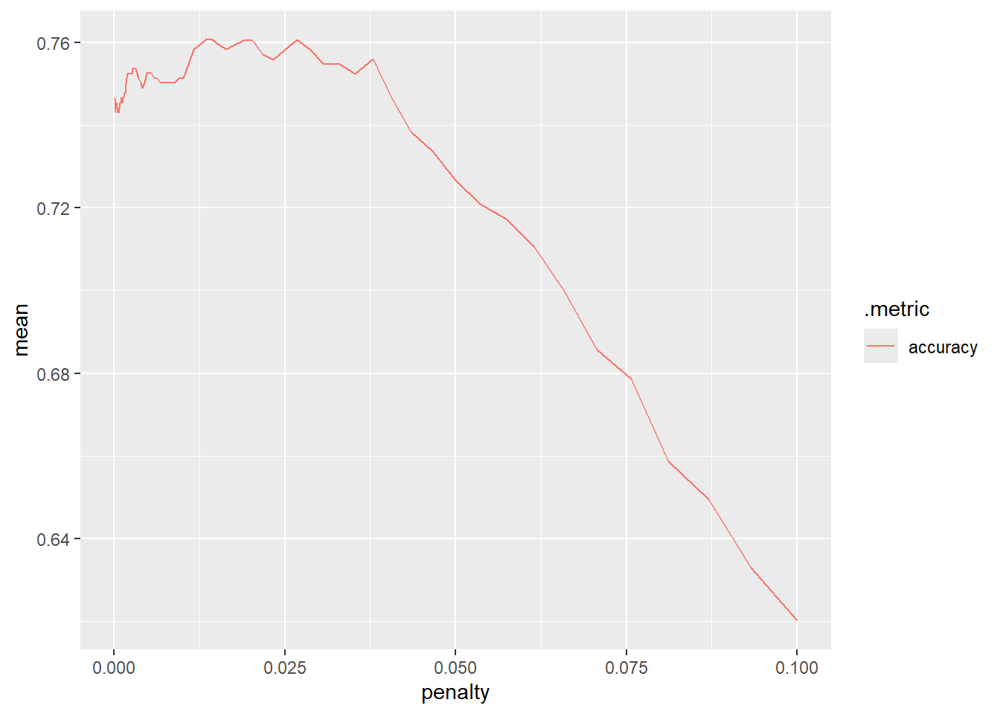
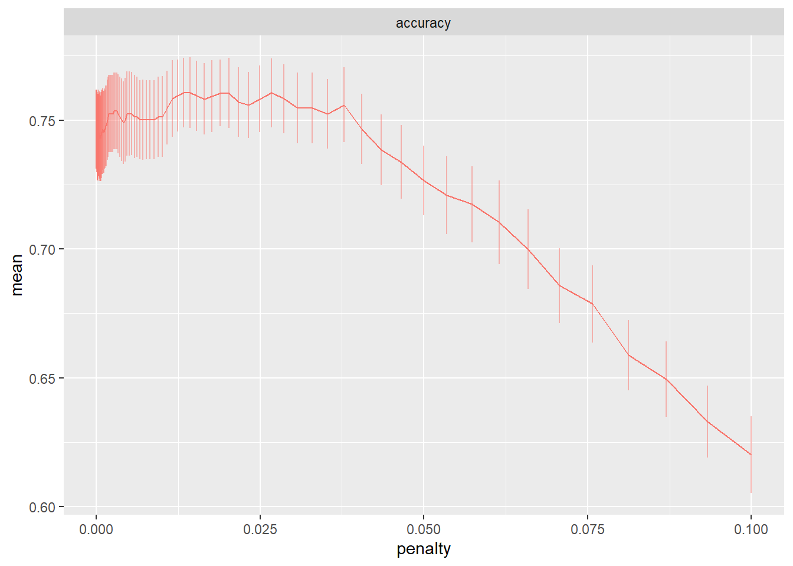

── Conflicts ───────────────────────────────────────── tidymodels_conflicts() ──
✖ purrr::discard() masks scales::discard()
✖ dplyr::filter() masks stats::filter()
✖ dplyr::lag() masks stats::lag()
✖ recipes::step() masks stats::step()
• Use tidymodels_prefer() to resolve common conflicts.
library(yardstick)library(psych)
Warning: le package 'psych' a été compilé avec la version R 4.4.2
Attachement du package : 'psych'
Les objets suivants sont masqués depuis 'package:ggplot2':
%+%, alpha
Les objets suivants sont masqués depuis 'package:scales':
alpha, rescale
library(caret)
Le chargement a nécessité le package : lattice
Attachement du package : 'caret'
Les objets suivants sont masqués depuis 'package:yardstick':
precision, recall, sensitivity, specificity
L'objet suivant est masqué depuis 'package:purrr':
lift
library(ROCR)
Warning: le package 'ROCR' a été compilé avec la version R 4.4.2
Description du jeux de données
Le jeu de données utilisé est issu du site Kaggle.com (https://www.kaggle.com/datasets/gmadevs/atp-matches-dataset?select=atp_matches_2017.csv). Il s’agit de résultats de tournois ATP de tennis (Association of Tennis Professionals Matches). Plus précisément, les données utilisées sont celles de matchs joués en 2017. On souhaite prédire la victoire ou non d’un joueur à partir d’informations sur le tournoi, sur le match, et sur le joueur et son adversaire.
La variable à expliquer est player1_wins qui prend la valeur TRUE ou FALSE.
Pour prédire le résulat du match on utilise les variables explicatives suivantes :
Informations sur le match
tourney_level : Niveau du tournoi (A : ATP 250, D: Coupe Davis, ou G : Grand Chelem)
round : tour du tournoi (F, SF, QF, R16, R32, R64, R128)
minutes : Durée du match
Information sur les joueurs
player1_rank_points et player2_rank_points : Nombre de points des joueurs au classement mondial
player1_age et player2_age : age des joueurs
Informations sur les performances des joueurs au service
player1_double_faults et player2_double_faults : nombre de double fautes commises par les joueurs au service.
player1_aces et player2_aces : nombre d’aces réalisés par les joueurs.
Importation des données
setwd("C:\\Users\\maiwe\\Documents\\M2\\Apprentissage stat")set.seed(123)# Charger les donnéestennis_data <-read.csv2("atp_matches_2017.csv",stringsAsFactors =TRUE, dec =".")
Ré-organisation des données
Le jeu de données choisi posait quelques problèmes qui nécessitaient de l’organiser de manière différente. En effet, les joueurs et les données qui leur étaient associées étaient directement désignés par “loser” et “winner”. J’ai donc décidé de créer la variable à expliquer “player1_wins”, et de désigner les joueurs par joueur 1 et joueur 2.
On commence par définir de manière aléatoire si le joueur 1 désigne le gagnant du match ou non.
Durant ce projet, trois principales méthodes d’apprentissage statistique seront testées pour prédire le vainqueur des matchs de tennis :
L’algorithme de régression LASSO (Least Absolute Shrinkage and Selection Operator)
Il s’agit d’une méthode derégression régularisée qui permet simultanément d’effectuer une sélection de variables et une estimation des coefficients. Cette méthode permet de gérer efficacement un grand nombre de variables explicatives, tout en évitant le surapprentissage. Elle permet également d’identifier les facteurs les plus importants dans la prédiction d’un match de tennis.
Les Forêts aléatoires (Random Forest)
Il s’agit d’une méthode basée sur la construction de plusieurs arbres de décision. Elle permet de capturer des relations non linéaires entre les variables (comme l’interaction entre le nombre d’aces et la surface du terrain par exemple).
Algorithme de Boosting (plus particulièrement XGBoost (eXtreme Gradient Boosting))
Il s’agit d’une méthode d’ensemble qui construit séquentiellement des modèles en se concentrant sur les erreurs des modèles précédents. Cette méthode est souvent très performante pour les problèmes de classification binaire et offre une bonne capacité de génétralisation.
Ainsi, ces trois approches apportent des informations complémentaires qui peuvent être intéressantes pour répondre à notre objectif. Le LASSO offre une grande interprétabilité et une sélection automatique des variables pertinentes. Les forêts aléatoires excellent dans la capture des interactions complexes entre variables. Et enfin, le Boosting permet souvent d’obtenir des performances prédictives très élevées.
Pour comparer ces modèles, deux métriques principales seront utilisées :
L’accuracy : Elle mesure la proportion de bonnes prédictions parmi l’ensemble des prédictions. Dans notre cas, il s’agit du pourcentage de matchs dont le résultat a été correctement prédit.
Le coefficient de Kappa : C’est une métrique plus robuste qui permet de s’affranchir des biais liés au hasard. Pour cela, il compare l’accuracy observée avec celle qui serait attendue par hasard. Plus ce coefficient se rapproche de 1, plus il y a un accord parfait entre les prédictions et les valeurs réelles. Une valeur de 0 indique au contraire que l’accord entre les valeurs prédites et les valeurs réelles équivaut au hasard. Dans notre cas, cette métrique est interressante, car dans le contexte du sport, de nombreux facteurs imprévisibles peuvent influencer le résultat, il est donc important de vérifier que le modèle est meilleur qu’une prédiction aléatoire.
Algorithme de régression LASSO
Préparation du recipe et du modèle
On commence par créer un recipe qui standardise les données et gère les variables catégorielles.
Les variables qualitatives sont en effet transformées en variables indicatrices.
lasso_recipe <-recipe(formula = player1_wins ~ ., data=data_train) |>step_novel(all_nominal_predictors()) |>step_dummy(all_nominal_predictors()) |>step_zv(all_predictors()) |>#zero value : enlever les variables qui prennent 0 valeursstep_normalize(all_predictors())
On configure le modèle de régression logistique avec pénalisation LASSO (en indiquant mixture=1).
Sélection du paramètre de régularisation (\(\lambda\)) par validation croisée
On commence par choisir une grille d’hyperparamètres (paramètre de régularisation \(\lambda\) ).
Cette grille a été ajustée afin de pouvoir sélectionner au mieux le paramètre de régularisation, et de visualiser l’impact de sa valeur sur les performances du modèle.
On trace l’évolution des performances du modèle (selon la métrique accuracy) lorsque l’on fait varier le paramètre \(\lambda\).
lasso_cv_metrics |>ggplot(aes(penalty, mean, color = .metric)) +geom_line()

lasso_cv_metrics |>ggplot(aes(penalty, mean, color = .metric)) +geom_errorbar(aes(ymin = mean - std_err,ymax = mean + std_err),alpha =0.5) +geom_line(linewidth =0.5) +facet_wrap(~.metric, scales ="free", nrow =2) +theme(legend.position ="none")

On entraine ensuite l’algorithme de regression LASSO avec le “meilleur” paramètre \(\lambda\) (ajusté par VC) sur le jeu de données d’entrainement, pour construir le prédicteur final :
On remarque que l’algorithme de régression LASSO (avec l’hyperparamètre \(\lambda\) ajusté par VC) pousse plusieurs coefficients de régression à \(0\) . Une sélection de variable s’est opérée de façon mécanique.
# A tibble: 2 × 3
.metric .estimator .estimate
<chr> <chr> <dbl>
1 accuracy binary 0.696
2 kap binary 0.391
On remarque que les résultats sont similaires à ceux obtenus par régression LASSO.
Le coefficient Kappa apporte une information interréssante également car il permet d’éviter les biais liés au hasard. L’accord entre les prédictions et la réalité est pour l’instant moyen, laissant une marge d’amélioration.
Pour améliorer ces résultats, on ajuste la valeur de mtry par validation croisée (VC).
Mise en oeuvre d’une forêt aléatoire avec choix du meilleur paramètre mtry par VC
Pour ne plus choisir mtry arbitrairement, on l’ajuste par validation croisée.
Sélection du paramètre mtry par validation croisée
On crée les blocs de la validation croisée (ici il s’agit d’une validation croisée 5 blocs répétée 5 fois) :
data_folds <-vfold_cv(data_train,v=5,repeats=5)
Choix d’une grille d’hyperparamètres : pour commencer, on choisit une grille assez grossière
parameters_grid <-tibble(mtry =seq(2,14,by=2))
Mise en oeuvre de la validation croisée sur les blocs créés précédemment (data_folds) pour tous les hyperparamètres de la grille choisie (parameters_grid) avec la fonction tune_grid :
On entraine le modèle sur les données d’entrainement en utilisant la nouvelle valeur de mtry. Puis on test les performances du modèle sur l’échantillon de test.
# A tibble: 2 × 3
.metric .estimator .estimate
<chr> <chr> <dbl>
1 accuracy binary 0.696
2 kap binary 0.390
En choisissant la valeur de mtry par VC , on remarque que l’accuracy et le coefficient Kappa augmentent nettement par rapport à la valeur arbitraire précédemment choisie.
Mise en oeuvre d’une forêt aléatoire avec choix du meilleur paramètre mtry par erreur Out of bag (OOB)
On s’intéresse maintenant à l’erreur Out Of Bag (OOB).
Mise en oeuvre de l’algorithme de forêt aléatoire avec les deux fonctions randomForest et ranger, avec les valeurs de paramètres (dont mtry) par défaut, et affichage de l’erreur OOB correspondante :
Le nombre de points au ranking mondial et le nombre d’ace réalisés par les joueurs au cours du match semblent avoir la plus grande importance. Le nombre de doubles fautes réalisées par le joueur 2 se distingue également.
Algorithmes de boosting
On met en oeuvre de l’algorithme xgboost avec ajustement des hyperparamètres (nombre d’arbres, profondeur des arbres, paramètre de régularisation) à l’aide du package tidymodels :
Model Accuracy Kappa
1 LASSO 0.7192982 0.4349442
2 Random Forest (VC) 0.6959064 0.3901235
3 Random Forest (OOB) 0.6842105 0.3666667
4 Boosting 0.6842105 0.3690037
Les trois méthodes testées montrent finalement des performances relativement proches, avec des taux de précision variant entre 71% et 78%. C’est une précision satisfaisante pour la prédiction de résultats sportifs. Il n’y a donc pas de méthode montrant une supériorité écrasante sur les autres.
Le modèle le plus performant est la forêt aléatoire optimisée par validation croisée, avec une accuracy de 77.8% et un coefficient Kappa de 0.55, indiquant une bonne capacité de prédiction au-delà du hasard. Le second modèle de forêts aléatoires montre des performances plutôt proches, ce qui confirme que cette méthode est robuste.
Le modèle LASSO obtient une performance très légèrement inférieure, avec 76% de précision. Il peut s’agir d’un bon compromis entre simplicité et performance.
Enfin, le Boosting présente les résultats les plus faibles avec une accuracy de 71.3% et un coefficient Kappa de 0.42. Ces résultats restent néanmoins satisfaisants.
Limites et perspectives
Les performance obtenues, bien que satisfantes, soulignent la complexité du sport de haut niveau. En effet, il reste une part importante de l’issue des matchs qui reste imprévisible.
Pour améliorer ces modèles, d’autres variables non présente dans ce jeu de données auraient pu être prises en compte, comme par exemple l’historique des confrontations entre les deux joueurs, ou encore l’état de forme des joueurs.